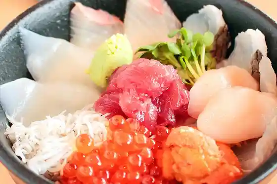
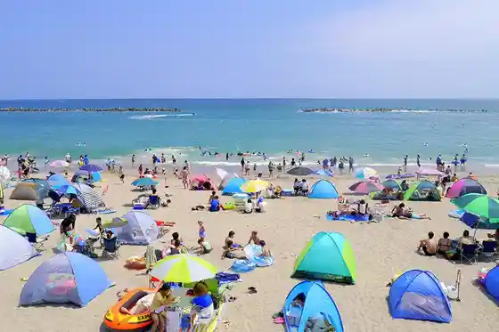
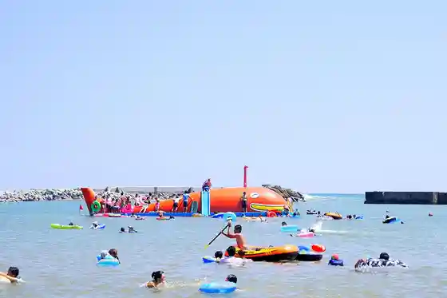
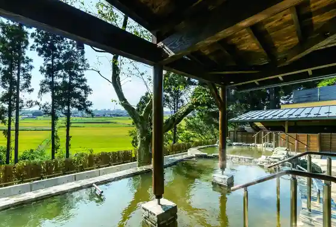

Kokuei Hitachi Seaside Park
Hitachinaka, Ibaraki · 029-265-9001 · Official / source link
Nakaminato Osakana Market
Hitachinaka, Ibaraki · 029-212-8900 · Official / source link

Ajigaura Beach (Ajigaura Coast)
Hitachinaka, Ibaraki · 029-273-0116 · Official / source link

Hiraiso Beach
Hitachinaka, Ibaraki · 029-273-0116 · Official / source link

Hitachinaka Onsen Kiraku Sato Bettei
Hitachinaka, Ibaraki · 029-229-2641 · Official / source link

Sakatsura Iso Mae Shrine (Sakatsuraisosakijinja)
Hitachinaka, Ibaraki · 029-265-8220 · Official / source link
Hiraiso Hakua Ki So (Chusei Dai Hakua Ki So)
Hitachinaka, Ibaraki · 029-273-0111 · Official / source link
Hoshiimo Shrine
Hitachinaka, Ibaraki · 029-265-9533 · Official / source link
Ajigaura Onsen no Zomi
Hitachinaka, Ibaraki · 029-265-5541 · Official / source link
Ajigaura Club
Hitachinaka, Ibaraki · 029-265-7111 · Official / source link
Sazakohii Main Shop
Hitachinaka, Ibaraki · 0120-37-1151 · Official / source link
Nakaminato Hansharo Ato (Fukugen)
Hitachinaka, Ibaraki · 029-273-0111 · Official / source link
(Kabu) Morita Suisan
Hitachinaka, Ibaraki · 029-263-4800 · Official / source link
Torazuka Burial Mound
Hitachinaka, Ibaraki · 029-273-0111 · Official / source link
Oshima Park
Hitachinaka, Ibaraki · 029-273-0111 · Official / source link
Hoshiimo Senmonten Daimaru Ya
Hitachinaka, Ibaraki · 029-263-7777 · Official / source link
Yamasa Suisan O Sakana Center Mise Wafu Resutoran Yamasa
Hitachinaka, Ibaraki · 029-262-5201 · Official / source link
Mawatari Haniwa Park
Hitachinaka, Ibaraki · 029-273-0111 · Official / source link
Kyo Yu Zen Hana Miyako
Hitachinaka, Ibaraki · 029-276-7703 · Official / source link
Teuchi Soba Man Kokorozashi Kona
Hitachinaka, Ibaraki · 029-285-0031 · Official / source link
Kurosawa Shoyu
Hitachinaka, Ibaraki · 029-272-3776 · Official / source link
Takeda Shi Kan
Hitachinaka, Ibaraki · 029-276-2525 · Official / source link
Maru Shin Budo Sono
Hitachinaka, Ibaraki · 029-262-4702 · Official / source link
Shiosai no Yado Maru Toku
Hitachinaka, Ibaraki · 029-265-7006 · Official / source link
Sakana Ichi
Hitachinaka, Ibaraki · 029-263-7008 · Official / source link
Resutohausu Sakyu
Hitachinaka, Ibaraki · 029-265-7101 · Official / source link
Naso Ba Tokoro Chion
Hitachinaka, Ibaraki · 029-263-7037 · Official / source link
Inaba Ya Kashi Mise
Hitachinaka, Ibaraki · 029-262-3701 · Official / source link
Uede Enkai Shita Dechoi Nomi Kinman
Hitachinaka, Ibaraki · 029-273-3603 · Official / source link
Hebi no Me Sushi (Hitachinaka)
Hitachinaka, Ibaraki · 029-274-8600 · Official / source link
Hiraiso Kan
Hitachinaka, Ibaraki · 029-262-2706 · Official / source link
Kaisen Sushi Umi Hana Tei
Hitachinaka, Ibaraki · 029-263-0025 · Official / source link
Mito Hakkei (Suimon Kihan)
Hitachinaka, Ibaraki · 029-273-0111 · Official / source link
Indo Ryori Mandara
Hitachinaka, Ibaraki · 029-272-0141 · Official / source link
Kimo no Rentaru Sennari Ya Hitachinaka Main Shop
Hitachinaka, Ibaraki · Official / source link
Jugo Ro Ana
Hitachinaka, Ibaraki · 029-273-0116 · Official / source link
Ryoso Matsukaze
Hitachinaka, Ibaraki · 029-265-8332 · Official / source link
Kaisen Resutoran Hamabe
Hitachinaka, Ibaraki · 029-262-3164 · Official / source link
Kui Doraku
Hitachinaka, Ibaraki · 029-262-3551 · Official / source link
Hitachinaka Maizo Bunkazai Chosa Center
Hitachinaka, Ibaraki · 029-276-8311 · Official / source link
Amimoto no Yado Ebi no Ya
Hitachinaka, Ibaraki · 029-265-8140 · Official / source link
Umi So Dairi
Hitachinaka, Ibaraki · 029-265-7339 · Official / source link
Shusai Okame
Hitachinaka, Ibaraki · 029-274-4567 · Official / source link
Hama Giku
Hitachinaka, Ibaraki · 029-265-7467 · Official / source link
Raifuin Katsuta Eki Nishi
Hitachinaka, Ibaraki · 029-270-0333 · Official / source link
Hitachinaka Buruberii Sono
Hitachinaka, Ibaraki · 029-272-5623 · Official / source link
Nihonryori Isa Bi
Hitachinaka, Ibaraki · 029-273-0133 · Official / source link
Buruberii Kawasaki
Hitachinaka, Ibaraki · 029-272-4788 · Official / source link
Soba Tokoro Inari Iori
Hitachinaka, Ibaraki · 029-275-0195 · Official / source link
Kappo Nishiki Ogi
Hitachinaka, Ibaraki · 029-285-3588 · Official / source link
Kaitenzushi Morita 1 Go Mise
Hitachinaka, Ibaraki · 029-263-4801 · Official / source link
Kodawaritonkatsu Ajima Main Shop
Hitachinaka, Ibaraki · 029-273-7461 · Official / source link
Chisan'in Hitachinaka
Hitachinaka, Ibaraki · 029-276-3011 · Official / source link
Yogashi Mise (Guretoriifu)
Hitachinaka, Ibaraki · 029-272-0480 · Official / source link
Shiisaido Haraya
Hitachinaka, Ibaraki · 029-262-4351 · Official / source link
Kiyomi So
Hitachinaka, Ibaraki · 029-265-8312 · Official / source link
Yamagami Mon
Hitachinaka, Ibaraki · 029-273-0111 · Official / source link
JA Hitachi Nagasuna Chokubai Tokoro
Hitachinaka, Ibaraki · 029-285-0202 · Official / source link
Sachi Ajidokoro Suruga
Hitachinaka, Ibaraki · 029-275-7211 · Official / source link
Chidoriya
Hitachinaka, Ibaraki · 029-265-8181 · Official / source link
Sake Bo Hikoroku
Hitachinaka, Ibaraki · 029-263-6327 · Official / source link
Matsumoto Ya
Hitachinaka, Ibaraki · 029-265-8113 · Official / source link
Yoichi
Hitachinaka, Ibaraki · 029-265-7841 · Official / source link
Rakuza
Hitachinaka, Ibaraki · 029-274-3551 · Official / source link
Tobitaya
Hitachinaka, Ibaraki · 029-265-8326 · Official / source link
Resutoran + Kafe Dahlia (Daria)
Hitachinaka, Ibaraki · 029-285-7020 · Official / source link
JA Hitachi Tsuda Chokubai Tokoro
Hitachinaka, Ibaraki · 029-274-8311 · Official / source link